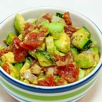

Avocado Salad

Description
Avocado salad is a fresh and vibrant dish made with ripe avocados, crisp vegetables like tomatoes, cucumbers, and onions, and often dressed with a light vinaigrette or citrus-based dressing. Creamy and flavorful, the avocado pairs perfectly with the crunchy textures and zesty flavors, making it a refreshing and nutritious option for a side or light meal.
Ingredients
- 2 ripe avocados - peeled, pitted and diced
- 1 sweet onion, chopped
- 1 green bell pepper, chopped
- 1 large ripe tomato, chopped
- ¼ cup chopped fresh cilantro
- ½ lime, juiced
- salt and pepper to taste
Steps
- Gather the ingredients.
- Combine avocados, onion, bell pepper, tomato, cilantro, and lime juice in a large bowl.
- Gently toss until evenly coated. Season with salt and pepper.
- Enjoy!
Home